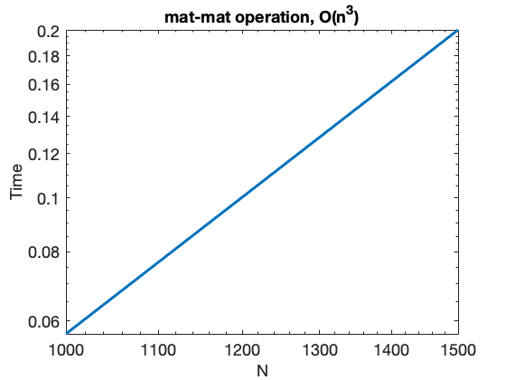
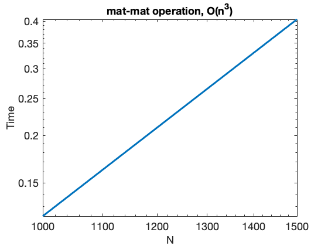

Contents
HomeWork 4
Juan Alejandro Ormaza CS375 September 21 2021
clear all;clc; format LONGE; close all;
Problem 1.a
ns = [2, 10, 100, 1000, 1500]; times=zeros(1,5); for i=1:5 n = ns(i); %Create two random vectors of size n A = rand(n,n); B = rand(n,n); %Measure time using the cputime command t = cputime; %Do the epxeriment 100 times (Why?) for j = 1 : 100 ip = A*B; %Compute Inner Product end %average the times times(i) = (cputime-t)/100.; end figure(1) loglog(ns, times, 'LineWidth',3) ax = gca; ax.FontSize = 18; title('mat-mat operation, O(n^3)','fontsize',18) ylabel('Time','fontsize',18) xlabel('N','fontsize',18) fprintf("The growth of the graph is O(n^3) (straight line with slope representing the growth in loglog)\n"); fprintf("as evident from figure 1. This matches the theoretical runtime discussed in class.\n")
The growth of the graph is O(n^3) (straight line with slope representing the growth in loglog) as evident from figure 1. This matches the theoretical runtime discussed in class.
Problem 1.b
for i=1:5 n = ns(i); %Create two random vectors of size n A = rand(n,n); B = rand(n,n); %Measure time using the cputime command t = cputime; %Do the epxeriment 100 times (Why?) for j = 1 : 100 ip = A*B; ip2 = A*B;%Compute Inner Product end %average the times times(i) = (cputime-t)/100.; end figure(2) loglog(ns, times, 'LineWidth',3) ax = gca; ax.FontSize = 18; title('mat-mat operation, O(n^3)','fontsize',18) ylabel('Time','fontsize',18) xlabel('N','fontsize',18) fprintf("Runtime will be affected if we calculate a*b and c*d. However, it will not affect the big-Oh of the process in general\n"); fprintf("That is, doing two O(n^3) operations is still O(n^3) and will only shift the line up or down\n"); fprintf("this behavior is indeed exhibited in figure 2 where the line is still O(n^3), but (if compared to figure 1)\n"); fprintf("the line is shifted up, yet parallel to the line in the previous figure (that is it is still the same big-oh\n");
Runtime will be affected if we calculate a*b and c*d. However, it will not affect the big-Oh of the process in general That is, doing two O(n^3) operations is still O(n^3) and will only shift the line up or down this behavior is indeed exhibited in figure 2 where the line is still O(n^3), but (if compared to figure 1) the line is shifted up, yet parallel to the line in the previous figure (that is it is still the same big-oh
Problem 2
solution_array = zeros(10,2); solution_array2 = zeros(10,2); for i=1:10 k=i; a=10^-2*k; A=[a 1; 1 1]; b=[1+a; 2]; solution_array(i,:)=GE_naive(A,b); solution_array2(i,:)=GE_spp(A,b); end
Problem 2.a
solution_array fprintf("As k grows and a becomes smaller, the solution in matlab gets to a plateau using GE naive\n"); fprintf("In which the values for x1 remain mostly constant and close to 1.");
solution_array =
1.000000000000001e+00 1.000000000000000e+00
1.000000000000001e+00 1.000000000000000e+00
1.000000000000001e+00 1.000000000000000e+00
1.000000000000001e+00 1.000000000000000e+00
1.000000000000001e+00 1.000000000000000e+00
1.000000000000001e+00 1.000000000000000e+00
1.000000000000001e+00 1.000000000000000e+00
1.000000000000001e+00 1.000000000000000e+00
1.000000000000001e+00 1.000000000000000e+00
1.000000000000001e+00 1.000000000000000e+00
As k grows and a becomes smaller, the solution in matlab gets to a plateau using GE naive
In which the values for x1 remain mostly constant and close to 1.Problem 2.b
solution_array2 fprintf("For GE spp it is completely different, however, because it seems GE spp introduces some perturbations\n"); fprintf("that affect some values in the table for x1. That is, some values are 9.99999e-1 and others are computationally speaking\n"); fprintf("exactly one.\n");
solution_array2 =
1.000000000000000e+00 1.000000000000000e+00
1.000000000000000e+00 1.000000000000000e+00
1.000000000000000e+00 1.000000000000000e+00
9.999999999999998e-01 1.000000000000000e+00
9.999999999999998e-01 1.000000000000000e+00
9.999999999999998e-01 1.000000000000000e+00
9.999999999999998e-01 1.000000000000000e+00
1.000000000000000e+00 1.000000000000000e+00
9.999999999999998e-01 1.000000000000000e+00
9.999999999999998e-01 1.000000000000000e+00
For GE spp it is completely different, however, because it seems GE spp introduces some perturbations
that affect some values in the table for x1. That is, some values are 9.99999e-1 and others are computationally speaking
exactly one.
Problem 3
mat_A=[0.1 0.2 0.3;0.4 0.5 0.6;0.7 0.8 0.9]; vec_b=[0.1; 0.3; 0.5];
Problem 3.a
mat_rank=rank(mat_A); fprintf("Since the rank for the matrix is 2, we can say that either 2 columns or 2 rows are completely\n"); fprintf("independent and that one is dependent of the aforementioned. To demonstrate this we find a y vector that satisfies Ay=0\n"); y=linsolve(mat_A,vec_b)
Since the rank for the matrix is 2, we can say that either 2 columns or 2 rows are completely
independent and that one is dependent of the aforementioned. To demonstrate this we find a y vector that satisfies Ay=0
Warning: Matrix is close to singular or badly scaled. Results may be inaccurate.
RCOND = 1.029820e-17.
y =
6.327985739750433e-02
8.734402852049913e-01
-2.700534759358290e-01
Problem 3.b
[x,Y,z]=GE_spp(mat_A,vec_b); x fprintf("notice that the resulting matrix does not have zero values outside the diagonal\n"); fprintf("meaning that at some point error propagated and caused the solution to differ radically from the expected solution\n"); Y fprintf("In this code I call the GE spp algorithm which fails from errors coming from division by zero or near zero.\n"); fprintf("that is at some point the computer will try to divide something\n");
x =
0
0
-1.718750000000000e-01
notice that the resulting matrix does not have zero values outside the diagonal
meaning that at some point error propagated and caused the solution to differ radically from the expected solution
Y =
1.428571428571429e-01 8.571428571428570e-02 1.714285714285714e-01
5.714285714285715e-01 4.999999999999989e-01 1.110223024625157e-16
7.000000000000000e-01 8.000000000000000e-01 9.000000000000000e-01
In this code I call the GE spp algorithm which fails from errors coming from division by zero or near zero.
that is at some point the computer will try to divide something
Problem 3.c
mat_A\vec_b fprintf("Matlab does try to return a solution, but it returns a warning message related to the matrix\n")'; fprintf("being singular or badly scaled.\n")
Warning: Matrix is close to singular or badly scaled. Results may be inaccurate.
RCOND = 1.029820e-17.
ans =
6.327985739750433e-02
8.734402852049913e-01
-2.700534759358290e-01
Matlab does try to return a solution, but it returns a warning message related to the matrix
being singular or badly scaled.